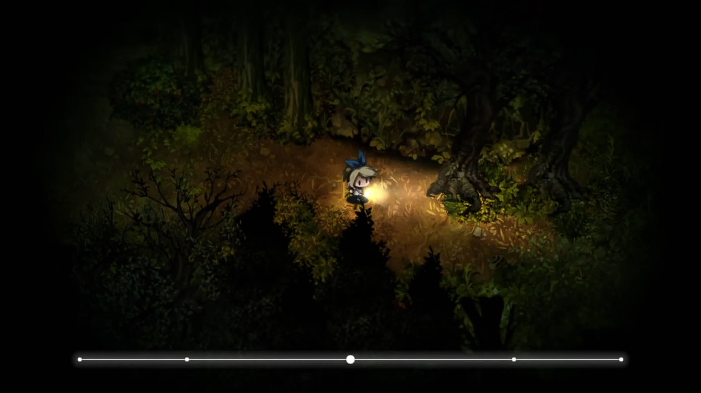
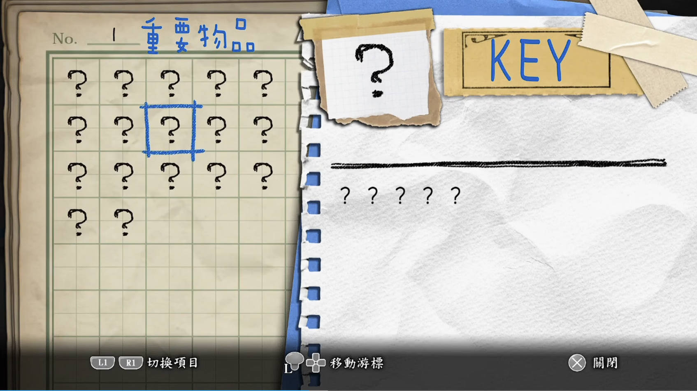

《Rules of Play》
概述
本文的摘录和解释都源自原书 P39~47 的内容。涉及符号学（Semiotics）的四个核心概念。对符号（Sign）、语境（Context）和意义（Meaning）的关系进行了分析。 从实际情况和个人能力出发，可能会对原文中一些内容进行转译，或在不影响原文含义的情况下，修改部分示例内容。
“所谓设计，就是设计者构建语境，被参与者接触，从而产生意义的过程。”
“Design is the process by which a designer creates a context to be encountered by a participant, from which meaning emerges.”
核心总结
符号不是符号本身，它作为某个东西的代指而存在
原句为“A sign represents something other than itself. ”
在井字棋（Tic-Tac-Toe）里，“X”和“O”的符号本身并没有什么实际意义，但它们不仅分别代表了两个玩家，而且代表了在井字棋九宫格内捕捉到（占领）的格子。
在现代游戏里也能看到符号的许多作用。比方说《夜廻二》的体力条，从美术的角度看，它们就只是四个小点、一个大点和一条线段组成的符号而已。 但在这个语境下，线段的长度代表当前的体力值。随着体力值下降，最外围的小点会与内侧的小点融合、变色，角色开始出现流汗气泡，提醒玩家适当留存体力。

符号需要被传译和解释
原句为“Signs are interpreted. ”
一个符号如果存在，则对于拥有符号的这个群体来说，它必然代表着某些符号以外的东西。我们把苹果叫做苹果，却不把苹果叫做奶龙。 然而不论是苹果还是奶龙，原本都只是两个汉字的组合而已。只有在中文的语境下，苹果才得以指代苹果。如果是放在某个游戏的语境下，苹果可能指代某个角色， 甚至是某个城镇、某套战术……符号的意义不在于本身，而在于围绕符号的整个解释系统。其中，人类是赋予符号意义的主体。
同理，我们可以在游戏（特别是UI界面）里找到许多专属于游戏本身的符号。比如说用问号代替未知物，或是用 X 键代替关闭的动作。

符号被解释，然后产生意义
原句为“Meaning results when a sign is interpreted. ”
因为我们不会把筷子当作喝汤的器皿（soup utensils）的一个符号，所以在服务员端上一碗汤，只给了筷子的情况下，我们可能会要求其提供勺子。
上面提到的是符号产生的意义与实际需求不匹配的情况。至于一个符号如何被创造，然后赋予意义……可以参考一个童年屡见不鲜的例子：在玩剪刀石头布的时候， 假如小明伸出了三根手指而不是两根或五根，他的同伴小刚大概率会询问这个“三根手指”代表的含义，小明可以解释为“这是剪刀”，此时小刚可能会接受这个新的符号定义， 从此用两根或三根手指代表剪刀成为他们的共识。 但小刚也可能拒绝，同时把小明揍一顿。
语境为符号提供解释的环境，从而塑造意义
原句为“Context shapes interpretation. ”
关于英语中的"I am lost."，它可以作为语境塑造意义的一个典例。
假如有一天，你收到了你的好友小乐的消息“我一直在找千恋·万花的安装包，I am lost.”，你会明白他在寻找正确的安装包的时候遇到了点麻烦。 如果他发了一张剧情架构图，然后说 "I am lost."，你会明白他沉溺在这款游戏错综复杂的剧情分支网里面，可能需要查看攻略才能找到正确的道路。
不过需要补充的是，我们对符号的解释，虽然在很大程度上受到语境的影响，但同时也受到结构（structure）的影响。结构是一系列规则， 它规定了符号应该被怎样组成。比方说语法结构，当你看到“雨天，我举起一把呃呃。”时，尽管你不知道“呃呃”是何物，但凭借你的语文知识和语感， 大概能判断出“呃呃”是一个名词，是某个东西。结构帮助我们去进行解释，但最终只有语境才能塑造意义。我们知道“呃呃”是一个东西之后， 又能通过“雨天”和“举起”判断出“呃呃”大概是能遮雨的东西。尽管如此，我们只能无限逼近“呃呃”的意义，却无法真正理解。 只有听到“呃呃”是某个游戏IP的联名雨伞名之后，它的意义才能产生。
这章的最后一部分，可以概括为：结构是由实际的元素构成的，而语境是多变的。早期的结构也可能会通过帮助解释的方式， 成为语境的一部分。